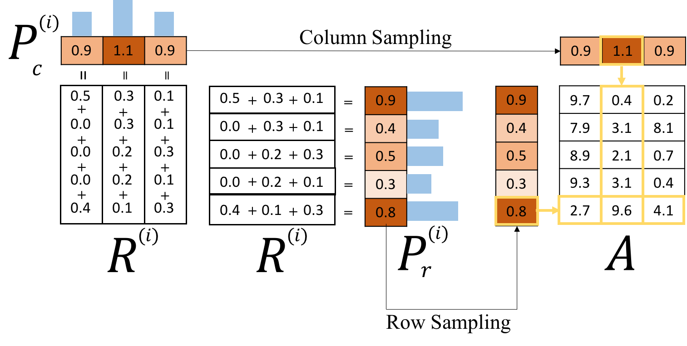

Local Topic Discovery via Boosted Ensemble of Nonnegative Matrix Factorization
Sangho Suh1, Jaegul Choo1,
Joonseok Lee2, Chandan K. Reddy3
1Korea University, 2Google Research, 3Virginia Tech
*Invited to Sister Conference Best Paper Track as the ICDM'16 Best Student Paper
August 19-25, 2017 @ Melbourne, Australia
Motivation


Sampled topics from papers containing keywords, 'dimension' or 'reduction'
Existing topic modeling algorithms provide users with
global topics that give general, redundant information
Proposed Idea
Local topic discovery to extract
more specific, informative topics
Proposed Method
(Intuition)


For local topic discovery,
1) Iterative Topic Modeling on Residual Matrix
-> Ensemble
2) Boost & Suppress -> Local weighting scheme
Localized Ensemble of
Nonnegative Matrix Factorization (L-EnsNMF)
Proposed Method
(Details)

1) NMF Topic Modeling
-> Find a set of topics
2) Residual Update
-> Identify unexplained parts (e.g. egyptian cat)
3) Anchor Sampling & Local Weighting
-> Reveal unexplained parts and suppress explained parts
Topic Modeling

where [
Identify unexplained parts using residual matrix, R
 'overexplained' parts (i.e., negative values) => zero
'overexplained' parts (i.e., negative values) => zero
Sample unexplained document(col) & keyword(row)

Reveal local topics & suppress global topics

by localizing residual matrix, R, and get RL
Use RL as an input to NMF topic modeling in the next stage

Deflation-based method helps to reveal
highly non-redundant, diverse topics
Exhaustive search for an
optimal active/passive set partitioning
Evaluation
- Reuters: Articles from the Reuters newswire in 1987
- 20 Newsgroups (20News): Newsgroup documents from
Usenet newsgroups - Enron: 2,000 randomly sampled emails from
Enron Corporation - IEEE-Vis (VisPub): Academic papers published in
IEEE Visualization conferences - Twitter: 2,000 randomly selected tweets generated from
New York City in June 2013
- Standard NMF (StdNMF)
- Sparse NMF (SprsNMF)
- Orthogonal NMF (OrthNMF)
- Latent Dirichlet Allocation (LDA)
Quantitative
Evaluation
L-EnsNMF generates topics of high-quality regardless of
the number of topics and datasets


Topics by L-EnsNMF become more and more diverse
as the number of topics increases


L-EnsNMF is the fastest and the most scalable

Qualitative
Topic Example
We generated 100 topics (10 keywords each) using each different method, but only L-EnsNMF extracted local, specific keywords,
e.g., ‘hurrican’, ‘sandi’, ‘ireland.’
Dataset: Twitter (New York City in June 2013)
Ireland football team visited New York City in June 2013
to boost a community hit by Hurricane Sandy in 2012
Future Work

Steer local weighting process to reflect
user's subjective interest and task goals
Conclusion
- L-EnsNMF discovers local, focused topics of interest to users
- Compared to existing topic modeling algorithms, it generates topics of higher quality, higher document coverage at faster speed
Thank you
Questions?
E-mail: jchoo@korea.ac.kr
Code: https://github.com/sanghosuh/lens_nmf-matlab